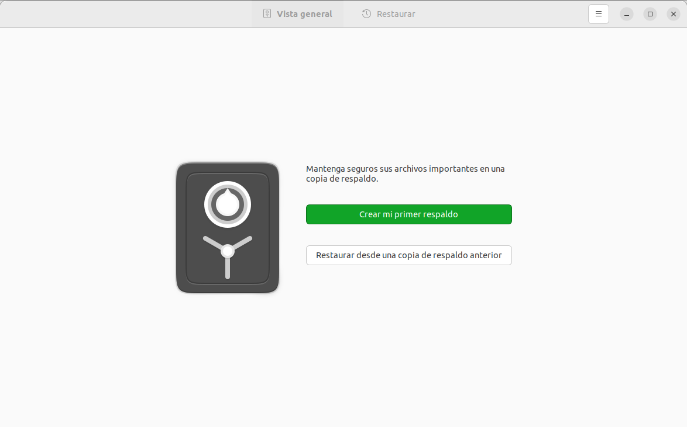
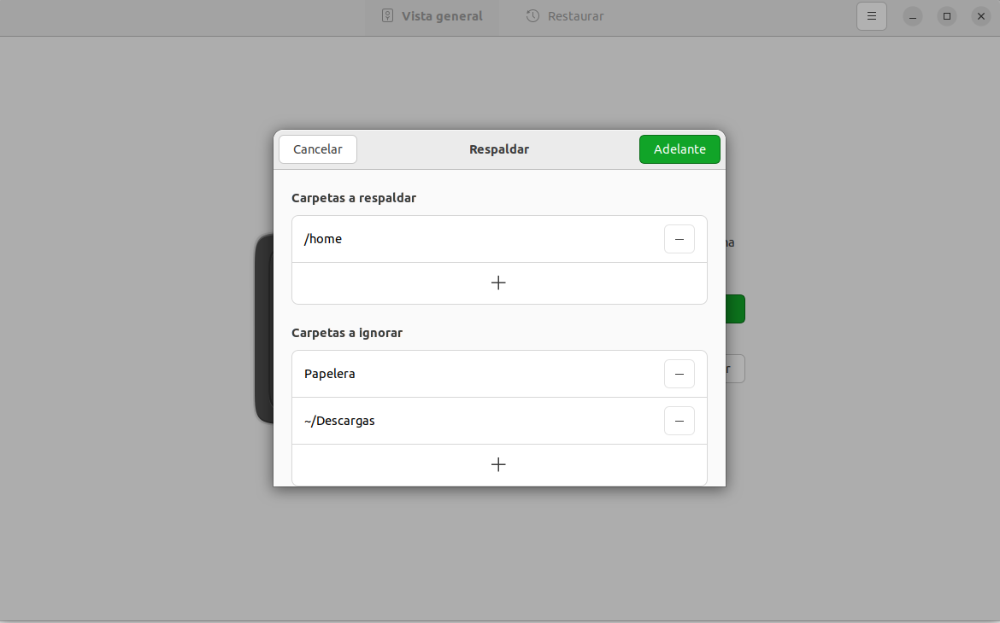
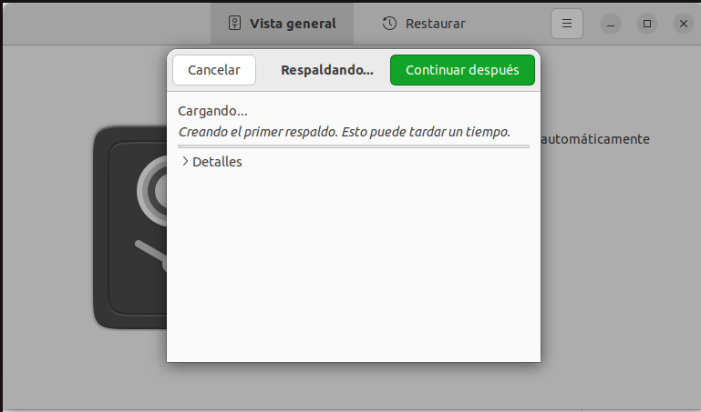

1ª Descargamos el programa ejecutando
el comando sudo apt install deja-dup con los repositorios actualizados
 2ª Ejecutamos el programa y una vez dentro
2ª Ejecutamos el programa y una vez dentro
solo tendremos dos opciones
crear un respaldo o restaurar un respaldo ya creado
 3ª Nos pedirá asignar que queremos guardar del disco
3ª Nos pedirá asignar que queremos guardar del disco
y que carpetas ignorar

4ª Seleccionamos el lugar
donde queramos guardar la copia de seguridad
5ª Por último el respaldo